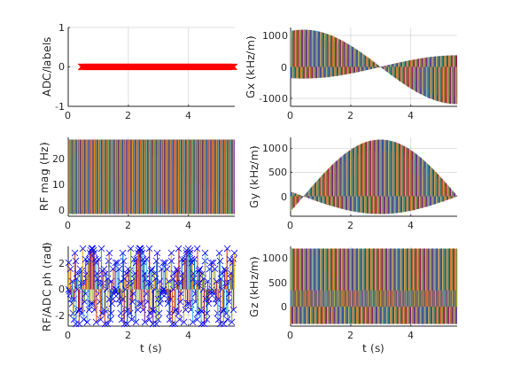

Contents
seq=mr.Sequence();
fov=250e-3; Nx=256;
alpha=10;
sliceThickness=3e-3;
TE=8e-3;
TR=100e-3;
Nr=128;
Ndummy=20;
delta=pi / Nr;
rfSpoilingInc=117;
sys = mr.opts('MaxGrad', 28, 'GradUnit', 'mT/m', ...
'MaxSlew', 80, 'SlewUnit', 'T/m/s', 'rfRingdownTime', 20e-6, ...
'rfDeadTime', 100e-6, 'adcDeadTime', 10e-6);
[rf, gz] = mr.makeSincPulse(alpha*pi/180,'Duration',4e-3,...
'SliceThickness',sliceThickness,'apodization',0.5,'timeBwProduct',4,'system',sys);
deltak=1/fov;
gx = mr.makeTrapezoid('x','FlatArea',Nx*deltak,'FlatTime',6.4e-3,'system',sys);
adc = mr.makeAdc(Nx,'Duration',gx.flatTime,'Delay',gx.riseTime,'system',sys);
adc.delay = adc.delay - 0.5*adc.dwell;
gxPre = mr.makeTrapezoid('x','Area',-gx.area/2,'Duration',2e-3,'system',sys);
gzReph = mr.makeTrapezoid('z','Area',-gz.area/2,'Duration',2e-3,'system',sys);
gxSpoil=mr.makeTrapezoid('x','Area',0.5*Nx*deltak,'system',sys);
gzSpoil=mr.makeTrapezoid('z','Area',4/sliceThickness,'system',sys);
delayTE=ceil((TE - mr.calcDuration(gxPre) - gz.fallTime - gz.flatTime/2 ...
- mr.calcDuration(gx)/2)/seq.gradRasterTime)*seq.gradRasterTime;
delayTR=ceil((TR - mr.calcDuration(gxPre) - mr.calcDuration(gz) ...
- mr.calcDuration(gx) - delayTE)/seq.gradRasterTime)*seq.gradRasterTime;
assert(all(delayTR>=mr.calcDuration(gxSpoil,gzSpoil)));
rf_phase=0;
rf_inc=0;
for i=(-Ndummy):Nr
for c=1:length(TE)
rf.phaseOffset=rf_phase/180*pi;
adc.phaseOffset=rf_phase/180*pi;
rf_inc=mod(rf_inc+rfSpoilingInc, 360.0);
rf_phase=mod(rf_phase+rf_inc, 360.0);
seq.addBlock(rf,gz);
phi=delta*(i-1);
seq.addBlock(mr.rotate('z',phi,gxPre,gzReph));
seq.addBlock(mr.makeDelay(delayTE(c)));
if (i>0)
seq.addBlock(mr.rotate('z',phi,gx,adc));
else
seq.addBlock(mr.rotate('z',phi,gx));
end
seq.addBlock(mr.rotate('z',phi,gxSpoil,gzSpoil,mr.makeDelay(delayTR)));
end
end
seq.plot();
seq.setDefinition('FOV', [fov fov sliceThickness]);
seq.setDefinition('Name', 'gre_rad');
seq.write('gre_rad.seq')
return;

trajectory calculation
[ktraj_adc, ktraj, t_excitation, t_refocusing, t_adc] = seq.calculateKspace();
time_axis=(1:(size(ktraj,2)))*sys.gradRasterTime;
figure; plot(time_axis, ktraj');
hold; plot(t_adc,ktraj_adc(1,:),'.');
figure; plot(ktraj(1,:),ktraj(2,:),'b');
axis('equal');
hold;plot(ktraj_adc(1,:),ktraj_adc(2,:),'r.');